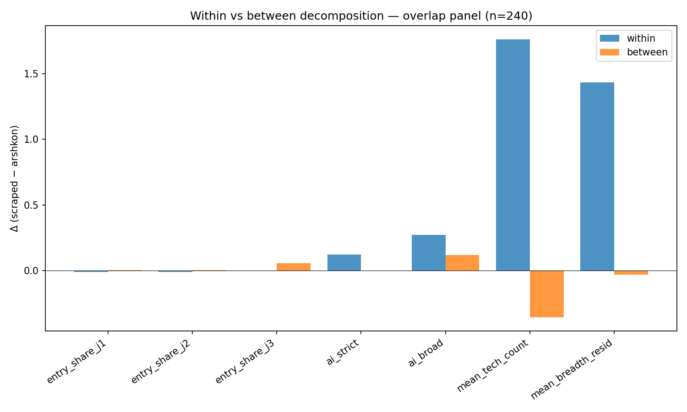
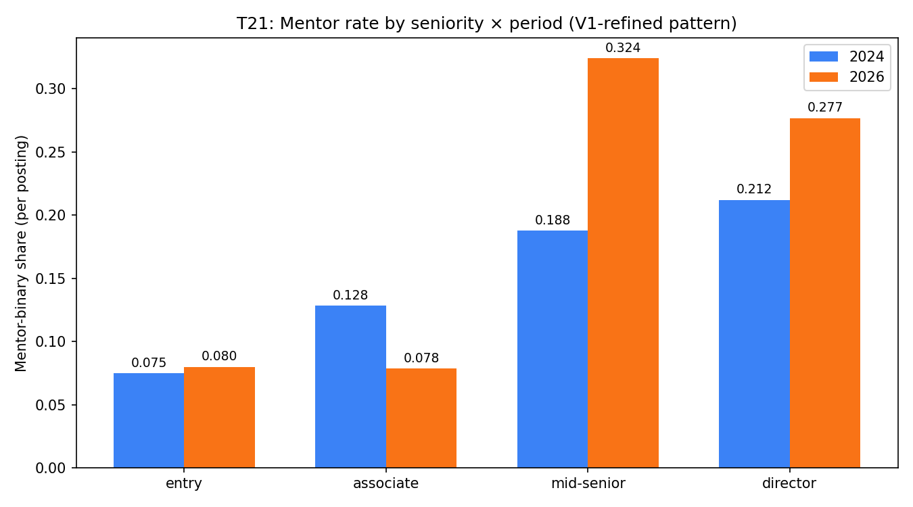
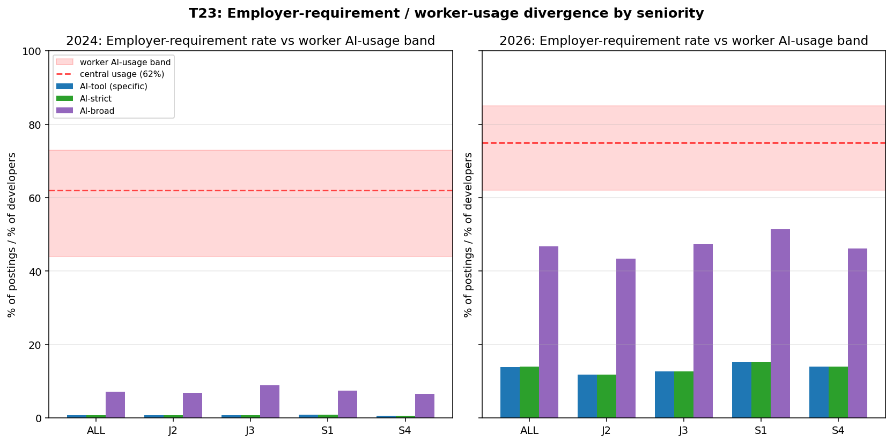
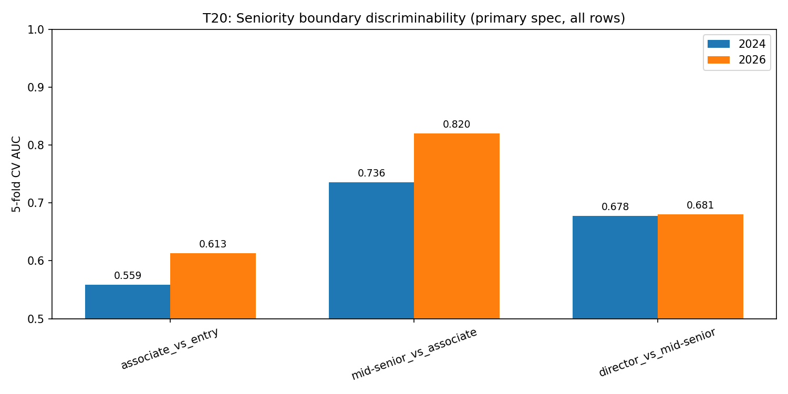

Employers rewrote SWE job postings for AI between 2024 and 2026¶
A SWE-specific, cross-seniority, within-company rewrite — and workers are still ahead¶
Wave 5 Presentation · Exploration phase · 2026-04-17
Did AI actually change what employers are hiring for?¶
- ChatGPT launched late 2022. By 2026, developer surveys say 62-76% use AI tools daily.
- Every labor-market story assumes job postings followed suit. Do they actually?
- This work pairs 2024 Kaggle LinkedIn snapshots with daily-scraped 2026 postings to read the employer side directly.
- Three questions drive the exploration: Did postings change? Who drove it? Do employers ask for what workers use?
The corpus: 63,701 SWE postings, two snapshots plus a rolling window¶
| Source | Period | Platform | Rows (SWE) | Role |
|---|---|---|---|---|
| Kaggle arshkon | 2024-04 | 4,691 | Entry-level labels | |
| Kaggle asaniczka | 2024-01 | 18,129 | Large volume | |
| Scraped | 2026-03 | 19,777 | Fresh window | |
| Scraped | 2026-04 | 21,104 | Fresh window |
- Plus 155,745 control-occupation rows (nurses, accountants, marketers) for DiD.
- 34,102 rows carry LLM-cleaned text; all text-sensitive analyses restrict to that frame.
- Every cross-period claim reports arshkon-only and pooled-2024 baselines.
Finding 1¶
AI-tool vocabulary rose 10× in SWE postings — and 99% of that rise is specific to SWE¶
AI-tool mentions rose from 1.5% to 14.9% of SWE postings¶

- Strict pattern (named tools: copilot, cursor, claude, RAG, LangChain…): 1.5% → 14.9%.
- Broad pattern (AI/ML mentions anywhere): 7.2% → 46.8%.
- Signal-to-noise ratio 35.4 on strict, 24.7 on broad — far above the within-2024 cross-source floor.
- Adjacent roles (ML-eng, data-sci) tracked SWE closely; control occupations stayed at 0.2%.
T18 · SWE vs adjacent vs control by period
Difference-in-differences: 99% of the rise is SWE-specific¶

- Control-occupation AI rate is essentially flat: 0.002 → 0.002.
- DiD strips the "everybody is writing like this now" story: 99% of the ai_strict rise is attributable to SWE.
- Tech-count rise: 95% SWE-specific. Requirement breadth: 72%. Description length: only 37%.
- Bootstrap 95% CIs clear of zero for every SWE-specific metric.
T18 · DiD share of change attributable to SWE
Finding 2¶
The rewrite happened inside the same companies, not because different companies posted¶
102% of the AI rise happened inside the same 240 companies¶

- On the arshkon ∩ scraped overlap panel (240 companies posting in both periods), AI-strict rose +14.1pp.
- Within-company decomposition: +14.4pp within vs −0.3pp between — 102% within-company.
- Length-residualized requirement breadth rose +1.43 composite units, 76% of companies broadened, 62% broadened by more than 1.0 unit.
- Holds 94-147% within across five sensitivities (specialist-exclude, aggregator-exclude, cap-50, labeled-only, pooled-2024).
T16 · Oaxaca decomposition, 240-co panel
Finding 3¶
Senior postings shifted disproportionately — toward mentoring and orchestration¶
Mid-senior mentor-binary rate rose 1.46-1.73×; entry rose 1.07׶

- Mentor rise is concentrated at mid-senior, not spread evenly.
- Orchestration density (code review, system design, workflow) approximately doubled at mid-senior.
- An emergent management + orchestration + strategic + AI sub-archetype appeared: n=860, 97% of its members are 2026.
- Staff-title share doubled: 2.6% → 6.3%. A new senior role type, not proportional template expansion.
T21 · Cross-seniority mentor-binary rate
Finding 4¶
RQ3 inverted: employers under-specify AI — workers are ahead¶
Employers ask for AI in 47% of postings; workers use AI in 62-76% of roles¶

- 2026 SWE broad-AI requirement rate: 46.8%.
- Stack Overflow 2024 developer survey: 62% currently using AI tools, 76% plan to.
- Octoverse 2024: 73% of OSS contributions involve AI. Anthropic 2025: 75% task exposure.
- Gap: −15 to −30 pp under every plausible benchmark. Direction is inverted from the pre-registered anticipatory-restructuring hypothesis.
- Seniors more AI-specified than juniors (51.4% vs 43.5%) — rules out an AI-as-junior-filter read.
T23 · Employer vs worker AI rates
Finding 5¶
Seniority boundaries sharpened, not blurred¶
Every adjacent seniority boundary became easier to predict in 2026¶

- Entry vs associate AUC: +0.054.
- Associate vs mid-senior AUC: +0.084.
- Yoe-excluded J3-vs-S4 panel: +0.134 AUC — a language-based junior/senior distinction got sharper by 13.4 AUC points.
- ML/AI gained the most boundary clarity (+0.105); it was the worst-discriminated domain in 2024.
- Management density replaced tech-count as the #2 mid-senior discriminator.
- Classic "AI converges junior and senior" hypothesis: rejected.
T20 · Per-boundary AUC, 2024 vs 2026
What changed — and what didn't¶
What did NOT change: junior share direction is baseline-dependent¶
- Under arshkon-only baseline: J1/J2 (label-based entry) −0.6pp.
- Under pooled-2024 baseline: J1/J2 +1.6pp — flip-flopped direction.
- SNR < 1 on every junior metric within-2024. The within-2024 cross-source gap exceeds the cross-period effect.
- Junior-share "rose" is NOT a defensible headline. We decomposed it into:
- Between-company composition (95% of J3 YOE-based rise comes from new-entrant tech-giant intern pipelines)
- LLM-label-routing selection (V1 confirmed a 2-3× labeled-vs-unlabeled J2-share gap)
What did NOT change: title concentration stayed stable¶
- Unique titles per 1K postings: 554 → 507 → 533 across periods.
- The title space did not fragment — it consolidated.
- Disappearing titles are legacy-stack:
java architect,drupal developer,senior php developer,sr. .net developer. - Staff-title doubled (2.6% → 6.3%) while "senior" share stayed flat — senior tier redistributed internally.
Methodological contribution: we built an infrastructure for this question¶
- T30 seniority panel. 4 junior definitions × 4 senior definitions × 2 baselines. Every seniority-stratified claim reports the full 4-row ablation.
- Semantic-precision protocol. 50-sample 25/25 by period, 80% floor. Killed
manage(14% precision),stakeholder(42%),team_building(10%). - DiD vs control. Every "SWE is doing X" claim tested against adjacent and control occupations with bootstrap CIs.
- Length residualization. Global OLS on composite components. Any composite with r > 0.3 against length gets residualized.
- T29 authorship-score mediation. Measures how much apparent change is recruiter-LLM-drafted text, not content shift.
Caveats we can't wave away¶
Caveat: 15-30% of the rise is recruiter-LLM-mediated¶
- T29 measured an authorship-score shift of +1.14 standard deviations 2024 → 2026. Recruiters adopted LLM drafting tools.
- Bottom-40% LLM-likelihood subset retains:
- 75-77% of AI-strict Δ (robust — real content change)
- 71-72% of mentor Δ (method-sensitive — 0-30% mediated)
- Paper should frame mentor attenuation as 0-30% with uncertainty; AI-strict claims are robust.
- Not a reframe to "it's all just LLMs." The substantive content shift survives.
Caveat: 2026 is a JOLTS hiring low, not a boom¶
- Info-sector openings Feb 2026 = 91K = 0.66× the 2023 average, 0.74× the 2024 average.
- All claims are share-of-SWE, not volume. No "employers hiring more X" language allowed.
- This is a share-restructuring finding inside a soft labor market, not an expansion finding.
Caveat: known pipeline bugs and taxonomy drift¶
is_remote_inferred= 100% False — preprocessing bug. Blocks all remote/hybrid analysis.- LinkedIn "IT Services" → "Software Development": +17pp industry-label swap across periods, mostly relabeling.
- Bare "developer" lost 61pp native-entry share between arshkon and scraped — platform taxonomy drift.
- Aggregator share nearly doubled (9.2% → 16.6%). Every corpus aggregate reports aggregator-excluded sensitivity.
- Asaniczka has zero native entry labels. Senior-side findings must lead with arshkon-only.
Contributions¶
Three contributions stacked¶
- A longitudinal SWE posting dataset. 63,701 LinkedIn SWE rows, 155,745 controls, harmonized across three sources and four time windows, with 34,102 LLM-cleaned descriptions.
- A measurement framework for posting-data research in the LLM era. T30 seniority panel, semantic-precision protocol, DiD-vs-control, length residualization, LLM-authorship mediation test.
- Three substantive findings.
- SWE-specific AI-vocabulary rewriting (99% DiD, 102% within-company)
- RQ3 inversion: employers lag workers by 15-30pp
- Senior-specific shift to mentoring + orchestration + AI-deployment
Paper positioning: hybrid dataset + substantive labor paper¶
- Lead: SWE-specific AI-vocabulary rewriting. DiD 99%. Within-company 102%. Cross-archetype (20/22). Geographically uniform (26/26 metros).
- Standalone novel finding: RQ3 inversion (employers under-specify AI).
- Supporting: senior-specific role shift, boundary sharpening, within-company scope broadening.
- Lead venue: ICWSM dataset & methods track — the methodological contributions land there, and the RQ3 inversion can anchor a short companion paper for a labor-economics venue (ILR Review, BE Journal).
RQ4 interviews: five concrete adjudication questions¶
Supported by six curated artifacts (four paired JDs, two ghost-flagged postings, charts):
- Scope realism — would a 2024 vs 2026 entry candidate meet the stated scope?
- Content vs stylistic change — which 2026 deltas are hiring-requirement change vs LLM template?
- Employer-usage gap mechanism — why 47% when workers use 62-76%?
- Senior redefinition — is the mgmt+orch+strat+AI profile a new role or relabeled seniors?
- LLM-authorship — how much of your JD came from an LLM draft?
Target: 10-15 hiring managers + 5 recruiters + 3 HR-tooling operators.
Analysis phase has ten ranked follow-on hypotheses¶
| Rank | Hypothesis | Why |
|---|---|---|
| 1 | H_A — employer/worker AI gap is cross-occupation | Extends RQ3 inversion |
| 2 | H_B — requirements-section contraction is hidden hiring-bar lowering | Substantive |
| 3 | H_C — "AI-enabled tech lead" as emergent senior role | Names cluster 2 |
| 4 | H_D — senior mentor rise = IC team-multiplier, not manager ladder | Mechanism |
| 5 | H_E — J1 drop + J3 rise is a labeling-regime shift | Methods caveat |
Ten total. Top three belong in the paper's "additional findings" section.
The bigger picture¶
Employers are rewriting — but they are trailing, not leading.
Between 2024 and 2026, job postings added AI vocabulary faster than workers did in any pre-existing benchmark we found. Yet workers were already further ahead. Seniors shifted toward mentoring; juniors didn't lose ground; boundaries got sharper.
The story is not "AI is hollowing out the rung." It is "AI forces seniors to become multipliers while employers learn to ask for tools their engineers already use."
Thank you.
All figures from T16/T17/T18/T20/T21/T23. Full audit trail at /raw/.